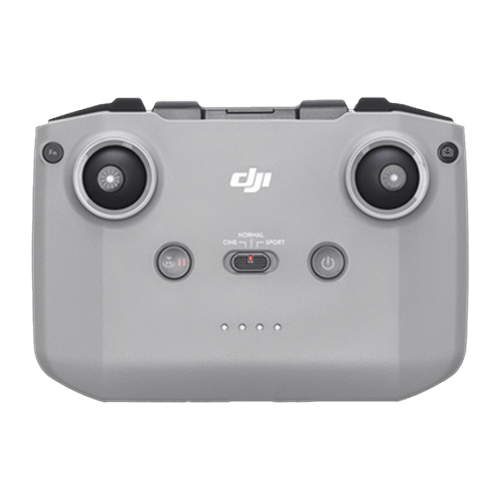
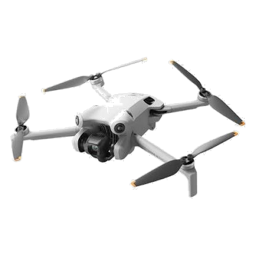
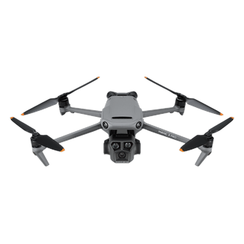

Kompatibilitas Luas
Mendukung Ragam Remote Controller & Armada Drone
Gunakan remote controller berlayar terintegrasi maupun smartphone Android dengan remote standar seri RC-N.
Remote Controller yang Didukung

DJI RC 2
Layar 5.5" FHD Terintegrasi

DJI RC Pro
Layar Ultra-Bright 1000 nits

DJI RC Pro 2
Generasi Terbaru Flagship

HP / Tablet Android
Remote RC-N1 / RC-N2 / RC-N3
Model Drone yang Didukung

Mini 4 Pro
Kamera 48MP

Mini 5 Pro
Generasi Baru

Air 3
Dual Kamera

Air 3S
Sensor 1-Inci

Mavic 3 Series
Mavic 3 / Pro / Classic

Mavic 4 Pro
Flagship Pemetaan